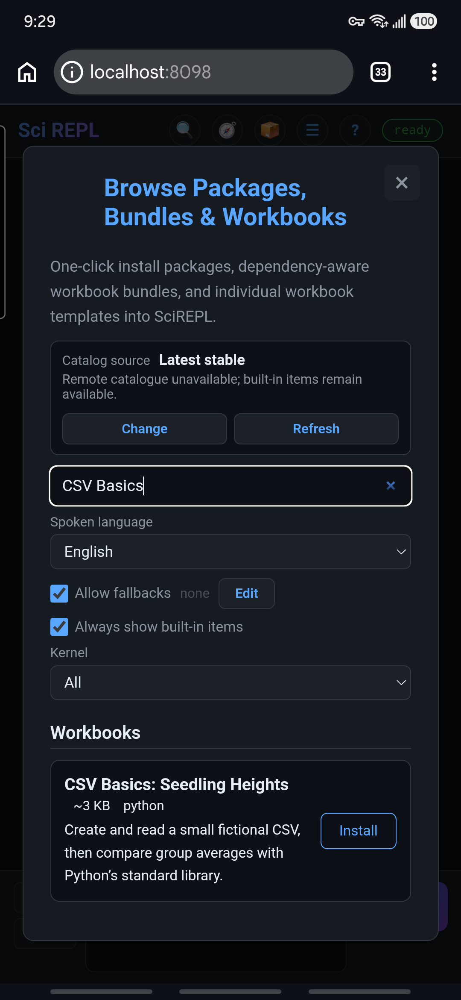
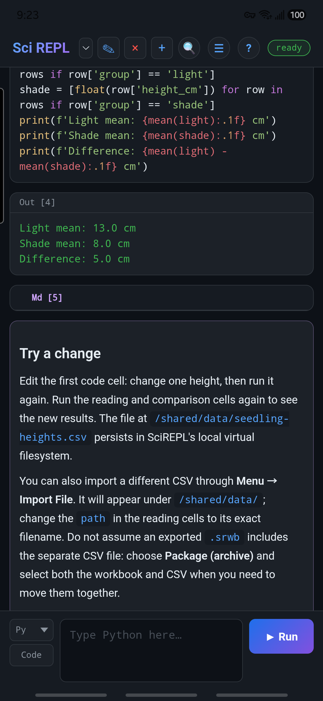
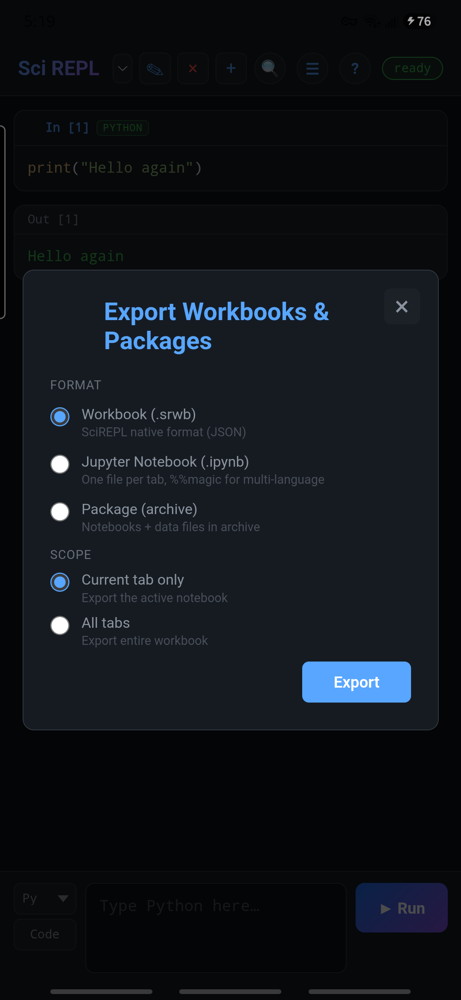

Learn by doing
Explore a CSV in a workbook
Start in Browse Packages, Bundles & Workbooks. Install a small example, run its cells, make one change, then import and export a CSV file. The data is fictional and the Python code needs no extra packages or AI account.
Screenshots show the Free interface on a Samsung Galaxy S24-series phone. In Pro, you can use the direct workbook download and Import File path below; the surrounding controls may differ, and this new Browse entry may not be present there.
Don't see this workbook in Browse yet? The example is new and may not be in your installed app or the hosted PWA until the next stable Free release. Download the workbook directly, then use Menu → Import File to open it. You can follow the rest of this lesson now.
Step 1
Find the workbook in Browse
- Open Menu → Browse Packages, Bundles & Workbooks. The optional 📦 header shortcut opens the same screen if it is visible.
- Search for CSV Basics. Under Workbooks, find CSV Basics: Seedling Heights. It is a built-in English example, not a package that needs installing into Python.
- Tap Install. The workbook normally becomes the selected tab. If you turned off automatic switching, use the workbook selector to choose it.

If a Privacy Policy appears: Browse may check the verified catalogue online. Read the disclosure, scroll inside the dialog to the bottom, and tap I Understand only if you agree. You may instead close the notice and still use built-in entries; the remote catalogue will be unavailable. This example itself needs no external dataset or Python package.
Installing a workbook adds its cells; it does not run them. That lets you inspect code before executing it.
Step 2
Run the cells in order
The opening text explains the sample. The three Python cells each have a name: create_csv, read_csv, and compare_groups. For a saved cell, tap its ✎ pencil to open the editor, then tap that cell’s Run. In Pro you can also double-tap the cell’s code to edit it.
- Run
create_csv. It writes six fictional rows to/shared/data/seedling-heights.csv. You should seeSaved 6 fictional rows. - Run
read_csv. It opens the file just created and prints all six rows. - Run
compare_groups. It prints a light mean of 13.0 cm, a shade mean of 8.0 cm, and a difference of 5.0 cm.
To view or edit the file itself, open Menu → Files & Storage, choose / (Persistent Storage) or All Filesystems, then scroll to /shared/data/seedling-heights.csv and tap its name. The preview has Edit and Save controls. Rerun the reading and comparison cells after saving a change.
The final output should look like this:
Light mean: 13.0 cm
Shade mean: 8.0 cm
Difference: 5.0 cmFirst run slower? Python may take a moment to initialize. Wait for the status badge to say ready before judging whether a cell finished. Later cells normally reuse the loaded runtime. If a runtime download needs consent, read the privacy notice before accepting; this workbook does not call %pip install.

These made-up values illustrate reading and calculating, not a scientific conclusion about light and plant growth.
Step 3
Change one value and rerun
Open create_csv with its ✎ pencil. In the list of measurements, change one light height from 14 to 15, then tap Run. Run read_csv and compare_groups again. The light mean is now about 13.3 cm and the difference about 5.3 cm.
You can instead change the value directly in Files & Storage. Save the CSV and rerun only read_csv and compare_groups; rerunning create_csv would overwrite your file edit.
Why rerun the later cells? Their saved output is a record of the previous execution; changing a file does not automatically recalculate earlier results. Each cell reads the file when you run it.
Step 4
Import the original CSV
- Download the original sample CSV to a folder your device’s file picker can open.
- In SciREPL, choose Menu → Import File and select
seedling-heights.csv. The confirmation should say it was uploaded to/shared/data/seedling-heights.csv. - This replaces the changed local file with the original six rows. Rerun
read_csvandcompare_groups; the two means should return to 13.0 and 8.0 cm.
Important: Do not rerun create_csv after importing a different file with the same name unless you intend to overwrite it. For your own CSV, note the exact confirmation path and change the path in the reading cells to that filename. The file picker may show Android Downloads, a cloud provider, or both.
Step 5
Save a portable copy
Open Menu → Export Workbooks & Packages. If you want only the cells, choose Workbook (.srwb) and Current tab only. An .srwb does not include the separate CSV in SharedVFS.
To move the workbook with its data, choose Package (archive), keep .zip, and select the CSV and the workbook in the contents tree. Then tap Export and choose a destination you control. The package exporter can include other tabs and files, so check the selection before sharing.

Local recovery is not a backup. Android app storage, the PWA in Chrome, and another browser do not automatically share these files. Keep the exported copy somewhere you control. See Files, import, and export for other formats.
What next?
Try a CSV of your own. Keep the columns group and height_cm, use numeric heights, and include at least one light and one shade row—or adapt the two group filters in compare_groups. You can inspect the local file under Menu → Files & Storage. For the phone controls used here, see the first-workbook interface walkthrough.